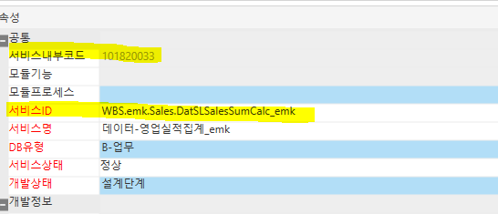
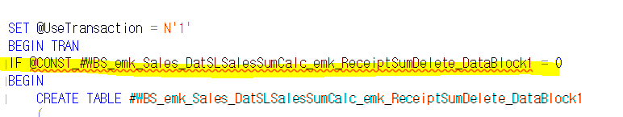

스칼라 변수 "@CONST \~~ 선언해야합니다.
메시지 137, 수준 15, 상태 2, 줄 85
스칼라 변수 "@CONST_#WBS_emk_Sales_DatSLSalesSumCalc_emk_ReceiptSumDelete_DataBlock1"을(를) 선언해야 합니다.
메시지 137, 수준 15, 상태 1, 줄 102
스칼라 변수 "@CONST_#WBS_emk_Sales_DatSLSalesSumCalc_emk_ReceiptSumDelete_DataBlock1"을(를) 선언해야 합니다.
메시지 137, 수준 15, 상태 2, 줄 151
스칼라 변수 "@CONST_#WBS_emk_Sales_DatSLSalesSumCalc_emk_ReceiptSumCreate_DataBlock1"을(를) 선언해야 합니다.
메시지 137, 수준 15, 상태 1, 줄 168
스칼라 변수 "@CONST_#WBS_emk_Sales_DatSLSalesSumCalc_emk_ReceiptSumCreate_DataBlock1"을(를) 선언해야 합니다.


Ace에서 데이터서비스 사용 시
서비스 ID 로 테이블 생성
표준 화면의 경우 서비스내부코드에 따라서
#TSLDeleteReceiptSum 이런 식으로 생성 해준다
=> 비즈니스는 새로 생성해도 데이터 서비스는 표준으로 사용해야함